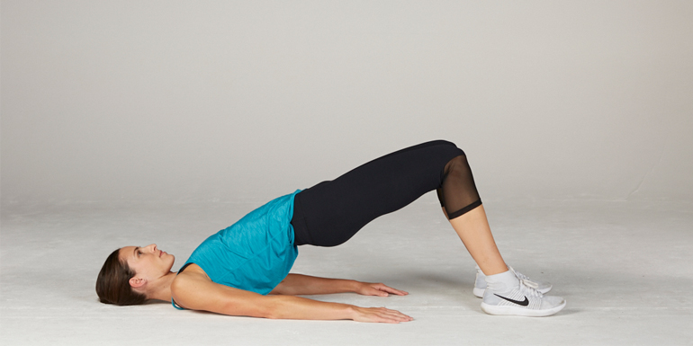

Plant your feet firmly on the ground with the knees over the heels. Lift the hips as much as it feels comfortable and slowly lower them again. Perform this exercise 10–15 times (or more), rest for 30–60 seconds, and repeat up to 5 times. This exercise strengthens your glutes.
